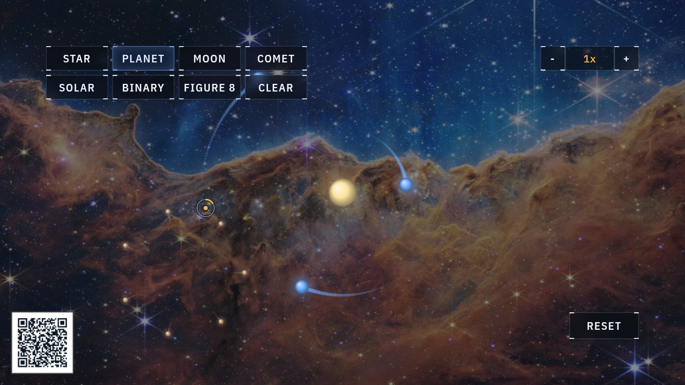

Gravity · n-body motion
Orbitals
Every body you drop pulls on every other one, all the time. With two bodies the result is clockwork, and adding a third tips the whole system into chaos.

At the display
- Pick a body from the palette (star, planet, moon or comet) and pinch in empty space to place it. New bodies join the dance immediately.
- Try the presets. SOLAR builds a tiny solar system, BINARY sets two stars waltzing, and FIGURE 8 stages a three-body choreography that took mathematicians centuries to find.
- Watch a comet's trail: long, stretched loops that sprint past the star and crawl far away. A single close pass can fling it out of the system for good.
What's really happening
One rule runs this whole scene: every mass pulls on every other, harder when closer, along the line between them. That is Newton's law of universal gravitation, and the word universal is the point. It is the same rule for a falling apple, for the Moon, and for everything you place here.
With two bodies the rule is tame. They trace perfect repeating ellipses, the same ones Kepler read out of planet tables four hundred years ago. Add a third body and something remarkable breaks: no formula exists for where everything will be. Tiny differences at the start grow into completely different futures. Physicists call this chaos, and it is why the display, like NASA, simulates. It sums the pulls on every body and steps time forward in thousands of small steps per second.
Slingshots happen here too. When a light body swings close past a heavy one, it can steal a little of the heavy one's motion and leave faster than it arrived, which is the same gravity assist real space probes use to reach the outer planets.